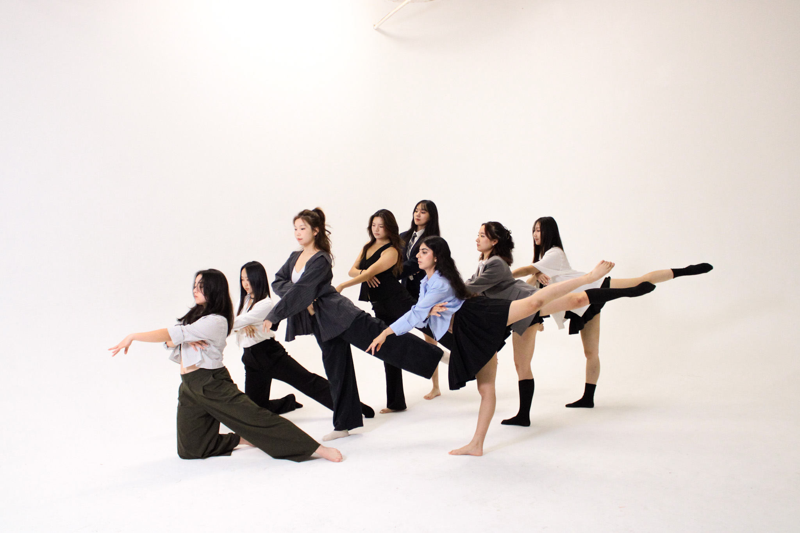
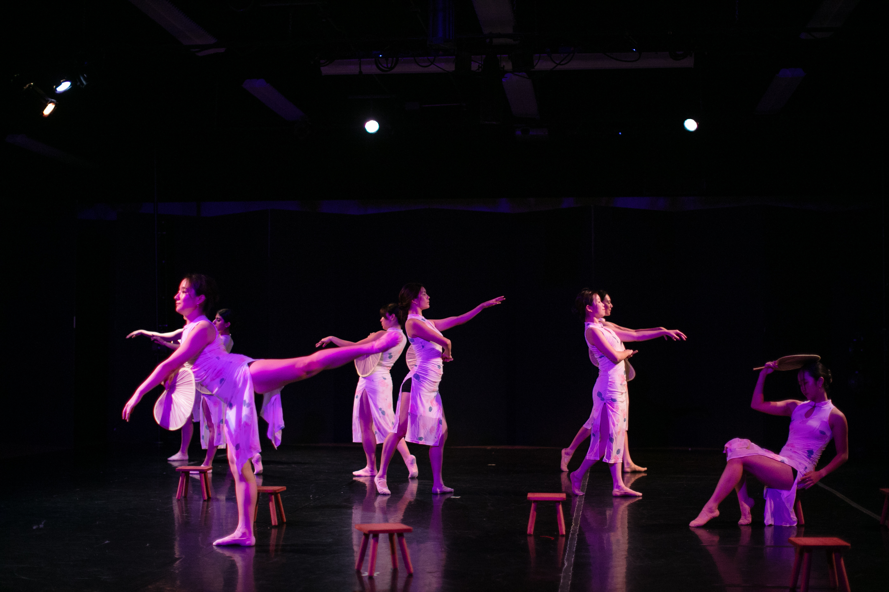
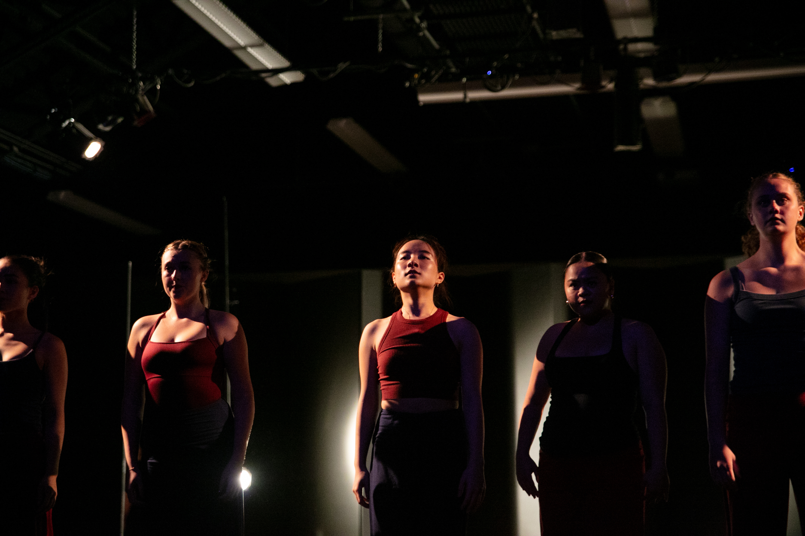
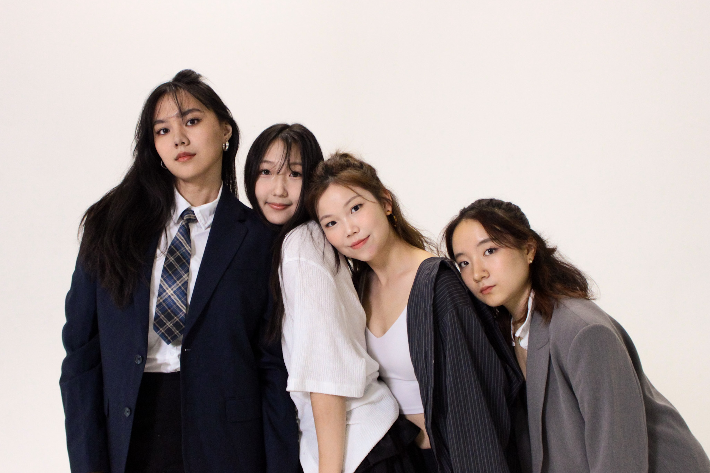
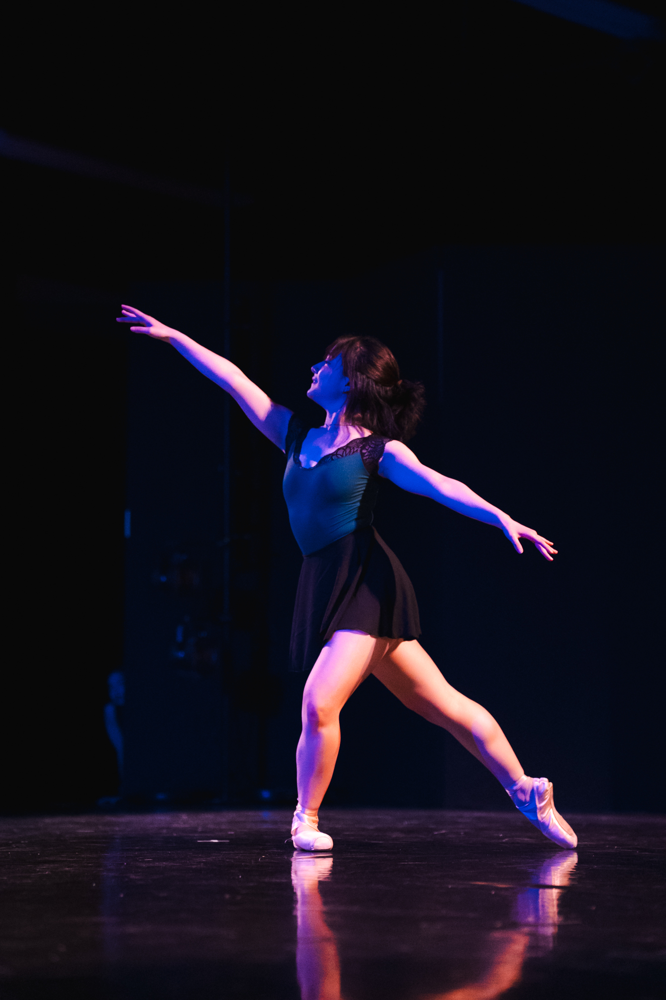
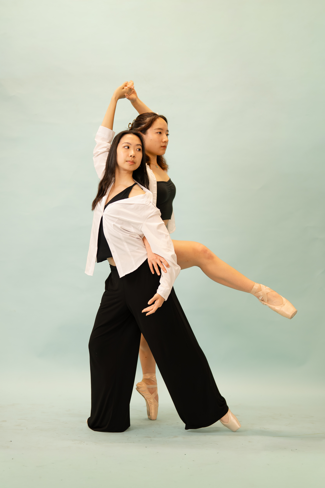
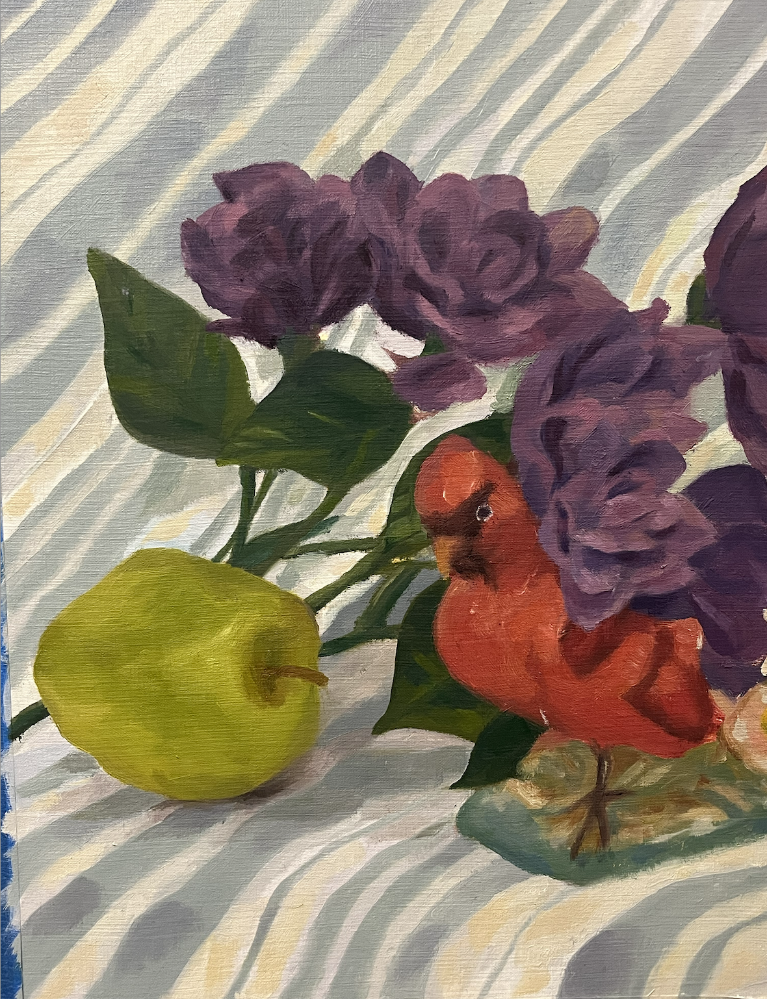
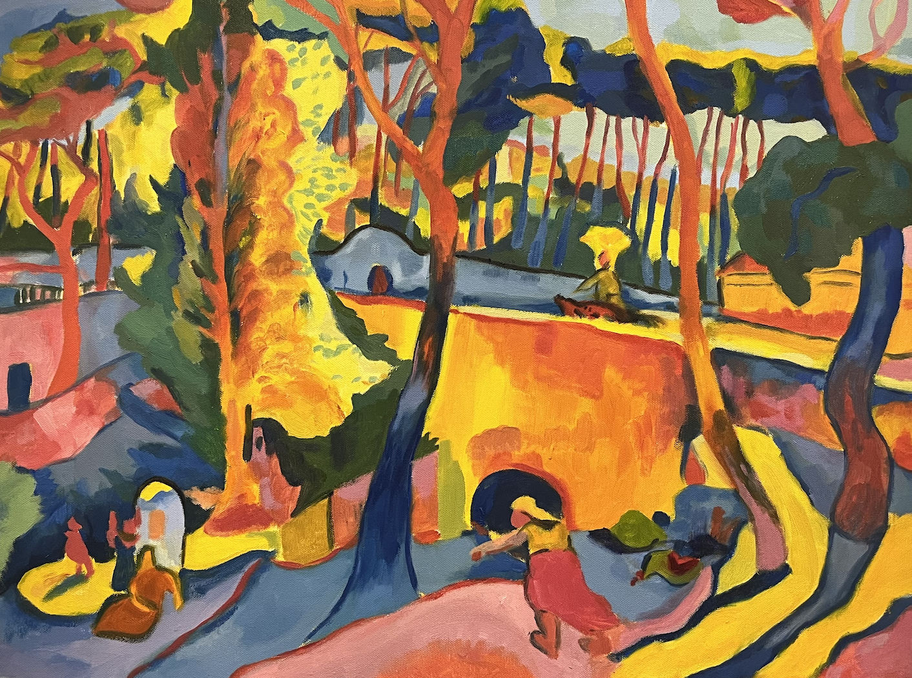

About me ⭐️
Hi! I am currently an undergraduate student, interested in mathematics research in the long term! I enjoy thinking about math problems and concepts. Currently I want to explore more about geometry, analysis, and topology. I also like coding! I've taken many computer science courses at Rice. Outside of academics, I love ballet, painting, travelling, and hanging out with friends!
Math + Academics
Orthogonal Polynomials on the Sierpinski Gasket

In summer 2025, I participated in the Tufts VERSEIM REU, and worked on analyzing orthogonal polynomials on the Sierpinski Gasket. We presented in the JMM 2026 undergraduate poster session.
Cortical Source Simulation
In summer 2024, I worked as a research assistant for Seymour Lab. I contributed to a publication for NeuroImage!
Notes/projects
MATH 401 Differential Geometry on Curves and Surfaces final project Fall 2024, taught by professor Jo Nelson
And other fun stuff!
Dance
I love dancing! I did ballet since I was four years old. Currently, I am a member of the Rice Dance Theater!







Painting
I also love painting and digital art! For more, check out my art instagram account!




This is a copy of the painting by Andre Derain, The Turning Road, L'Estaque, oil on canvas, 1906